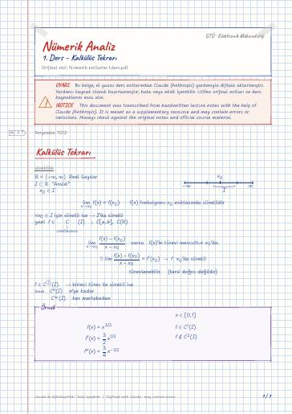

Nümerik Analiz · Dijital ders notu
1. Ders – Kalkülüs Tekrarı
- Ders
- Nümerik Analiz (MAT214)
- Dönem
- 3. Dönem · 2022–2023 Güz
- Biçim
- PDF · 7 sayfa · 0,2 MB · el yazısı görünümlü LaTeX
- Orijinal not
- Numerik-notlarim-1.ders.pdf

The digital notes were created from the handwritten notes with the help of Claude (Anthropic); they are meant as a supplementary resource and may contain errors. Always rely on the original notes and the official course materials.
Bu notta neler var?
- Kalkülüs Tekrarı
- 1 (Rolle Teoremi)
- 2 (Ortalama Değer Teoremi)
- 3 (Extremum değer Teoremi)
- 4 (Ara değer teoremi)
- 5 (İntegral için ara değer teoremi)
- Taylor polinom ve Serisi
- (Taylor)
Notun metni
Düz metin olarak göster (formüller ve çizimler yoktur)
x_0 I için sürekli ise → I 'da sürekli
türevlenebilir. (tersi doğru değildir)
f C^ 1(I) → birinci türev ile sürekli ise
örnek C^n(I) n 'ye kadar
*'in en az bir noktada türevinin 0 olduğunu
* Claude notu: muhtemelen (π2x) olmalı ( f(1) = 0 ancak böyle sağlanır).
(Extremum: max ve min)
2 f (a,b) 'de türevlenebilirse, → c_1 ve c_2 noktaları aralığın uç noktaları
yada f' 'nin sıfır olduğu noktalar
(Örnek 2'nin grafiği)
f C[a,b] k f(a) ile f(b) arasında bir sayı o halde öyle c (a,b)
noktası bulunabilir ki: f(c) = k olur. k = 0
o halde öyle bir aralığında en az bir kökünün olduğunu gösteriniz
Riemann manasında integrallenebilir f C[a,b]
f C[a,b] ve g [a,b] aralığında R.A.İ ve işaret değiştirmez
Taylor polinom ve Serisi
Bu durumda, her x [a,b] için, x_0 ve x noktaları arasından
n'inci dereceden taylor polinomu
n → ∞ P_n(x) limitte Taylor serisini verir
değerini tahmini hesaplayınız ve hatasını değerlendiriniz
c) |f(x) - P_2(x)| hatasını [0,1] aralığında değerlendiriniz (solda yuvarlak içinde: ``ödev'')
hesaplayınız ve hatasını değerlendiriniz
0,5 'te max değer alır